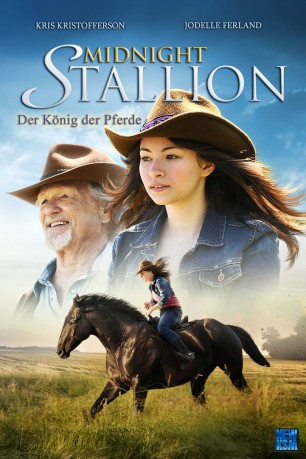

#8482 Midnight Stallion - Der König der Pferde
 
 IMDB-Wertung: 5.0 / 10
IMDB-Wertung: 5.0 / 10  Metascore: 0
Metascore: 0 
Die Farm von Jack und seiner Frau Rita steht kurz vor dem Bankrott. Als jedoch deren fünfzehnjährige Tochter Megan den wilden Hengst Midnight entdeckt, scheint ein Ausweg gefunden. Allen Widrigkeiten zum Trotz versucht die Familie binnen kürzester Zeit Midnight zu zähmen und zu trainieren, um bei einem Rennen das rettende Preisgeld zu ergattern. Doch dann verletzt sich Jack schwer und es liegt nun an Megan die Farm zu retten... Dieser wunderschöne und inspirierende Familienfilm präsentiert eine Geschichte, die tief unter die Haut geht und den Wert der Familie in den Vordergrund rückt.
Jahr: 2013
Dauer: 90 Minuten
FSK: 0
Land: Kanada Studio: New KSMTonspuren: DTS - ,
Untertitel: Deutsch,
Auflösung: 1080p (1920x1080) Größe: 7034 MB
Genre: Action, Drama, Familie
Regisseur: William Dear
Drehbuch: Mark Stouffer
Soundtrack: Chris Ainscough
Darsteller:
 Kris Kristofferson als Jack Shepard
Kris Kristofferson als Jack Shepard Jodelle Ferland als Megan Shephard
Jodelle Ferland als Megan Shephard Chelah Horsdal als Rita Shepard
Chelah Horsdal als Rita Shepard- Matt Mazur als Ross Chaney
 April Telek als Belinda Chaney
April Telek als Belinda Chaney- Sean Devine als Donald Dupree
 Paul Jarrett als Melvin
Paul Jarrett als Melvin- Aaron Pritchett als Singer / Bank Leader
- William Dear als Whip T. Vicker
- David Orth als Brad Chaney
- Carlos Joe Kostas als AJ Owens
- Christophe Gauthier als Pastor Michaels
- Mark Burgess als Mort (Realtor)
- Deborah Florko als Sign-up Lady
Datei: X:\2013(I-M)\Midnight Stallion - Der König der Pferde (2013, FSK0, 1920x1080).mkv seit 07.03.2018
Festplatte: HD 2013(I-Z)-2014(A-Z)
 Es gibt insgesamt 89 Filme in der Gruppe '2013(I-M)'
Es gibt insgesamt 89 Filme in der Gruppe '2013(I-M)'